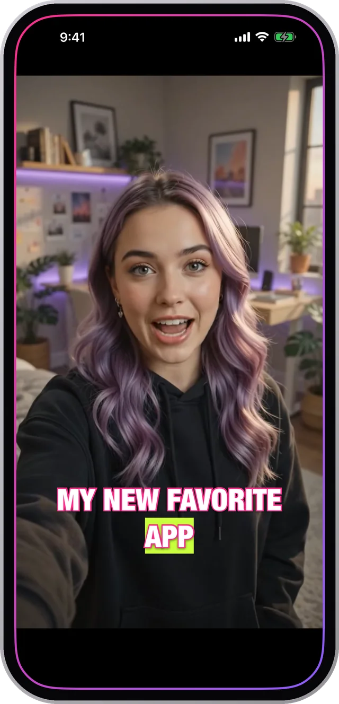

How to add captions to Instagram Reels
Instagram will caption a Reel for you. The question worth asking is whether you want it to, because the version it produces is not the version you designed.
Here is the difference, and where the text has to sit so it is actually visible.

Built-in captions versus burned-in captions
Instagram's sticker captions are generated after upload, in Instagram's fonts, with Instagram's animation. You get a handful of preset styles and you cannot move much beyond them. They also do not exist anywhere else: cross-post the same file to TikTok and it arrives bare.
Captions burned into the video are part of the image. Whatever you chose is what everyone sees, on every platform, forever. The trade-off is that you cannot edit them after export, which in practice matters less than it sounds because you still have the project.
Where the Reels interface covers your text
- The bottom of the frame holds the account name, the caption text and the audio strip. Anything in the lower fifth is at risk.
- The right-hand edge holds like, comment, share and the profile picture. Keep text out of roughly the right 15%.
- The very top can pick up the status bar and, in some placements, a header.
- That leaves the middle band and the lower-middle third, which is exactly where captions read best anyway.
Export settings that survive the upload
Export vertical at 9:16. Instagram re-encodes everything, and starting from a correctly framed vertical file means it has nothing to crop, which is where captions usually get clipped.
Keep the text a size you would call slightly too big on a laptop. It will be right on a phone, which is where it is going to be watched.
How to do it in Charlatan
- Open or record your clip in Charlatan and let it transcribe.
- Choose 9:16 in the aspect row so you are working in the frame Reels will actually show.
- Style the captions, then drag them up into the lower-middle third: clear of the bottom fifth and the right-hand strip.
- Tap the fullscreen button to check the placement at real size before you commit.
- Export, then upload to Instagram and skip the caption sticker. Yours is already in the file.
Questions people also ask
Does Instagram add captions automatically?
Yes, through the caption sticker, which transcribes the audio after upload. You get Instagram's fonts and a few preset styles, and the captions only exist on that copy of the video.
Do captions increase Reels views?
Captions do not change the algorithm directly, but they change how long people watch, and watch time is what the ranking uses. Most feed video is watched muted, so a clip nobody can follow without sound loses viewers in the first seconds.